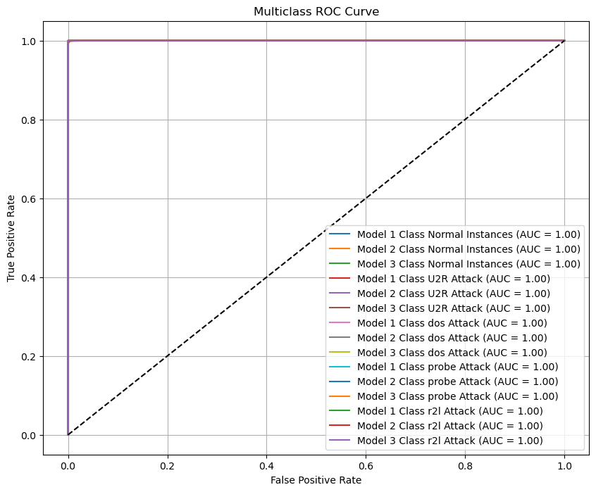
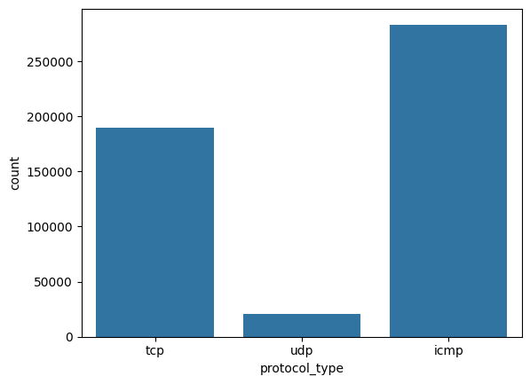
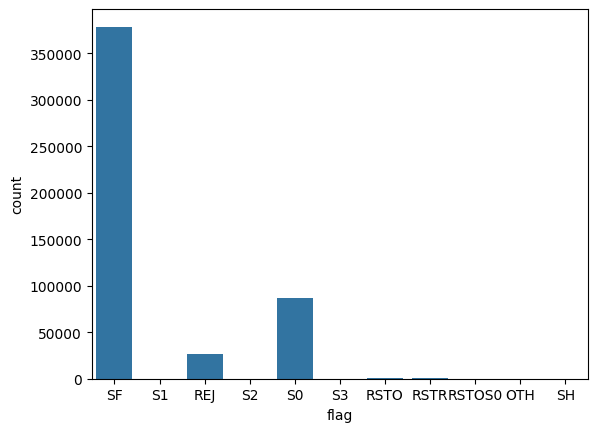
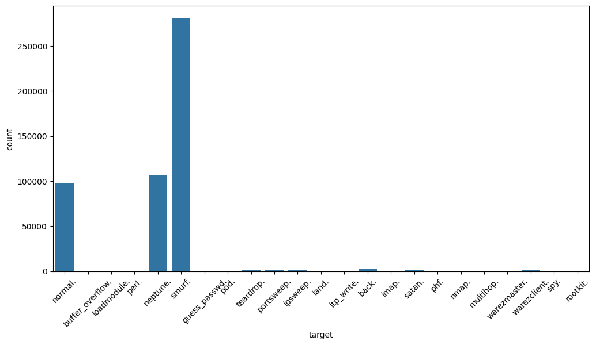
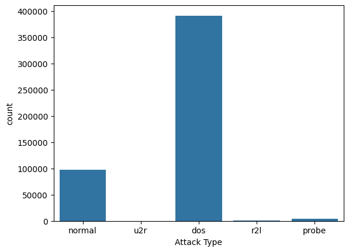

Anomaly
Detection
Menu
Home
Upload
Prediction
Performance Analysis
Chart
Logout
Static Chart
Anomaly Detection
Anomaly Detection
Static Visualization Charts
Accuracy Chart
ROC Graph

Dataset Class Distribution Chart
Protocol Count Chart

Flag Count Chart

Target Count Chart

Attack Distribution Graph
